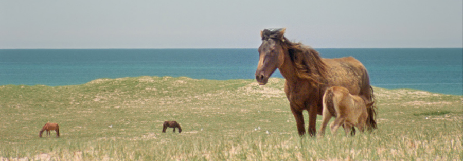

GEOGRAPHIES OF SOLITUDE (2022) with filmmaker Jacquelyn Mills
GEOGRAPHIES OF SOLITUDE (Jacquelyn Mills, 2022, 103 min, DCP)
For the better part of 50 years, naturalist and environmental researcher Zoe Lucas has lived alone on Sable Island, an isolated Nova Scotia sandbar of a mere 12 square miles. As custodian of the island’s seals and wild horses and observer of its changing tides and shores, Lucas both documents the island’s ecosystems and is deeply integrated within them.
Jacquelyn Mills’ exquisite portrait film GEOGRAPHIES OF SOLITUDE proceeds from the knowledge that one cannot understand Lucas apart from the landscape, or the landscape apart from Lucas. Mills’ 16mm cinematography keeps Lucas at a respectful distance, but brings us closer to the land itself: by developing her footage in the island’s seaweed, yarrow, and horse dung, she yields richly textured imagery that crystallizes the austere beauty of the environment rather than explaining it. While Lucas’ voice serves as a guide to these otherworldly scenes, Mills also gives voice to the island’s flora and fauna by sampling and transforming field recordings into meditative musical compositions.
GEOGRAPHIES OF SOLITUDE holds enormous curiosity for unique environments and the enigmatic people we encounter there, but transcends documentary convention by gently resisting the temptation to overreach; instead, Mills’ film – like Lucas herself – models the possibility of new forms of ecological attention, repair, and advocacy.
Filmmaker Jacquelyn Mills will appear for discussion and audience Q&A after the screening.
Presented with support from the MFA in Documentary Media and the Hoffman Visiting Artist Fund for Documentary.